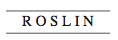

104
Çoğunlukla Şifre Katedrali denilen Rosslyn Şapeli, İskoçya’da Edinburgh’un on bir kilometre güneyinde, eski Mitras mabedinin bulunduğu tarafta yer alıyordu. 1446’da Tapınak Şövalyeleri tarafından inşa edilen şapel, Yahudi, Hıristiyan, Mısır, Mason ve pagan geleneklerinden gelen çeşitli sembollerle donatılmıştı.
Şapelin coğrafi koordinatları, Glastonbury’den geçen kuzey-güney meridyenine düşüyordu. Bu Gül Çizgisi boylamı, Kral Arthur’un Avalon Adası’nın geleneksel işaretiydi ve İngiltere’nin kutsal geometrisinin merkezi sayılıyordu. Rossyln -Roslin olarak okunuyor- adını bu kutsal Gül Çizgisi’nden almıştı.
Langdon ile Sophie kiraladıkları arabayı, şapelin kurulduğu kayalıkların dibindeki çimli park alanına çekerlerken, Rosslyn’in sivri kulelerinin gölgeleri uzuyordu. Onları bekleyen şeyin verdiği heyecanla her ikisi de uyuyamamış olsa da, Londra’dan Edinburgh’a rahat bir uçuş yapmışlardı. Başını kaldırarak bulutlarla dolu gökyüzünün önündeki gösterişsiz büyük yapıya bakan Langdon kendini tavşan deliğine baş aşağı düşen Alice gibi hissetti. Bu bir rüya olmalı. Bununla birlikte Saunière’in son mesajının daha açık olmayacağını biliyordu.
Kutsal Kâse Roslin’in altında
Langdon, Saunière’in “Kâse haritasının” bir diyagram -hazinenin X işaretiyle gösterildiği bir çizim- olacağını hayal etmişti ama tarikatın son sırrı da Saunière’in onlarla baştan beri konuştuğu şekilde açıklanmıştı. Basit bir dize. Apaçık dizeler, şüpheye hiç yer bırakmadan aradıkları yerin burası olduğunu gösteriyordu. Rosslyn’den ismiyle bahsetmenin yanı sıra, dizeler şapelin mimari çizgilerine de değiniyordu.
Saunière’in son açıklamasının açıklığına rağmen Langdon aydınlanmış olmaktan çok, şaşırmıştı. Ona göre Rosslyn Şapeli çok anlaşılır bir yerdi. Bu taş şapel yüzyıllar boyunca Kutsal Kâse’nin varlığından söz edilen fısıltılarla yankılanmıştı. Yeraltını tarayan radarlar yakın zaman önce, şapelin altında şaşırtıcı bir yapının -büyük bir yeraltı odası- var olduğunu ortaya çıkardığında bu fısıltılar, bağırışlara dönüşmüştü. Bu derin mahzen üstündeki şapeli gölgede bırakmakla birlikte, herhangi bir giriş ya da çıkışı yoktu. Arkeologlar gizemli odaya ulaşmak için kayalıkları delme talebinde bulunmuşlar fakat Rosslyn Vakfı kutsal alanda her türlü kazıyı açıkça yasaklamıştı. Elbette bu tavır, spekülasyonları arttırmaktan başka bir işe yaramamıştı. Rosslyn Vakfı neyi saklamaya çalışıyordu?
Rosslyn artık gizem arayıcılarının haccı haline gelmişti. Bir kısmı, bu koordinatlardan yayılan nedeni açıklanamaz güçlü bir manyetik alanın onları buraya çektiğini iddia ederken, bazıları kayalıklardan mahzene giden gizli girişi bulmak için geldiklerini söylüyordu ama çoğu, bu topraklarda yürümek ve Kutsal Kâse ilmini iyice içlerine sindirmek için geldiklerini itiraf ediyordu.
Langdon daha önce Rosslyn’e gelmemiş olmasına rağmen, şapelin Kutsal Kâse’nin yeni yuvası olduğunu her duyduğunda kendi kendine gülerdi. İtiraf etmek gerekirse, Rosslyn bir zamanlar Kâse’ye ev sahipliği yapmış olabilirdi, uzun zaman önce... ama kesinlikle şimdi değil. Son yıllarda Rosslyn’e çok fazla dikkat çekilmişti ve birisi er geç mahzene girişin yolunu bulacaktı.
Kâse uzmanları Rosslyn’in bir tuzak yemi olduğu konusunda birleşiyorlardı... tarikatın ustaca ördüğü dolambaçlı çıkmazlardan biri. Ama bu gece, tarikatın kilit taşı alenen bu noktadan bahsettiği için Langdon artık fazla ukalalık taslayamayacağını düşünüyordu. Gün boyunca aklından şaşırtıcı bir soru geçmişti:
Saunière bizi bu kadar aleni bilinen bir yere getirmek için neden bunca zahmete girdi?
Tek bir mantıklı cevabı olabilirdi.
Rosslyn hakkında henüz anlayamadığımız bir şey var.
“Robert?” Sophie arabanın dışında durmuş, ona bakıyordu. “Geliyor musun?” Yüzbaşı Fache’nin onlara iade ettiği gül ağacı kutuyu taşıyordu. Her iki kripteks de içinde, ilk bulduklarındaki gibi yatıyorlardı. Papirüsteki şiir ise ortasına yerleştirilerek kilitlenmişti... kırılan sirke şişesi artık yoktu.
Çakıllı uzun patikadan yürüyen Langdon ile Sophie, şapelin ünlü batı duvarını geçtiler. Sıradan ziyaretçiler çıkıntı yapan bu tuhaf duvarın, şapelin tamamlanamayan bir bölümü olduğunu sanırlardı. Langdon ise gerçeğin, daha ilgi çekici olduğunu hatırlıyordu.
Süleyman Mabedi’nin batı duvarı.
Tapınak Şövalyeleri, Rosslyn Şapeli’ni, Kudüs’teki Süleyman Mabedi’nin mimari bir kopyası gibi inşa etmişlerdi; dar dörtgen bir ibadethane, ilk dokuz şövalyenin paha biçilmez hazinelerini sakladığı Kudsülakdas gibi bir yeraltı mahzeni ve tüm bunları tamamlayan bir batı duvarı. Langdon, Tapınakçılar’ın modern Kâse bankasını, Kâse’nin ilk saklandığı yeri çağrıştıracak şekilde inşa etmeleri fikrinin ilginç olduğunu itiraf etmek zorundaydı.
Rosslyn Şapeli’nin girişi, Langdon’ın tahmin ettiğinden daha gösterişsizdi. Küçük ahşap kapının iki demir menteşesi ve meşeden basit bir tabelası vardı.

Langdon, Sophie’ye, bu eski adın, şapelin üzerinde bulunduğu Gül Çizgisi meridyeninden geldiğini anlattı... ya da Kâse alimlerinin inanmayı tercih ettiği gibi, Magdalalı Meryem’den gelen soya ithafen “Gül Boyu” kelimesinden.
Şapel kısa süre sonra kapanacaktı. Langdon kapıyı açınca, eski büyük yapı, uzun bir günün sonunda yorgunlukla içini çekiyormuşçasına içeriden dışarıya sıcak bir hava akıntısı oluştu. Şapelin giriş kemerleri oymalı beşparmak otlarıyla süslenmişti.
Güller. Tanrıçanın göbeği.
Sophie ile birlikte içeri giren Langdon, gözleriyle tüm ibadethaneyi inceleyerek, her şeyi hafızasına kazımaya çalıştı. Daha önce Rosslyn’in ayrıntılı taş işlemelerini kitaplarda okumuş olmasına rağmen, kendi gözleriyle görmek büyüleyici bir tecrübeydi.
Langdon’ın meslektaşlarından biri buna, semboller cenneti, demişti.
Şapeldeki her bir yüzeye semboller kazınmıştı; Hıristiyan haçları, Yahudi yıldızları, Mason mühürleri, Tapınakçı haçları, boynuzlar, piramitler, astrolojik işaretler, bitkiler, sebzeler, beş köşeli yıldızlar ve güller. Tapınak Şövalyeleri, Avrupa’nın her bir yanına tapınak kiliseleri diken, usta birer taş duvarcısıydı, ama Rosslyn onların sevgi ve saygı ile harcadıkları emeğin en yüce ürünüydü. Duvar ustaları işlenmemiş tek bir taş bırakmamışlardı. Rosslyn Şapeli tüm inançların... tüm geleneklerin... ve her şeyden önemlisi, doğa ile tanrıçanın mabediydi.
Kilise, günün son turunu yaptıran genç bir adamı dinleyen birkaç ziyaretçi dışında boştu. Adam, onları, yerdeki çok iyi bilinen bir hattın üzerinden yürütüyordu... mabetteki altı anahtar mimari noktayı birbirine bağlayan görünmeyen bir patika. Ziyaretçiler yüzyıllar boyunca, noktaları birbirine bağlayan bu düz çizgiler üzerinden yürümüşlerdi ve onların ayak izleri yeri aşındırarak, kocaman bir sembol oluşturmuştu.
Davut’un yıldızı, diye düşündü Langdon. Kesinlikle tesadüf değil. Aynı zamanda Süleyman’ın mührü olarak bilinen bu altıgen, bir zamanlar yıldızları gözetleyen rahiplerin gizli sembolü olmuş ve daha sonradan İsrail kralları Davut ve Süleyman, tarafından benimsenmişti.
Langdon ile Sophie’nin içeri girdiğini gören gözetmen kapanış vakti olmasına rağmen, tebessüm ederek etrafı diledikleri gibi gezebileceklerini işaret etti.
Langdon başını sallayarak teşekkür ettikten sonra, mabedin içinde ilerlemeye başladı. Bununla birlikte Sophie, yüzündeki şaşkın ifadeyle girişte kalakalmıştı.
Langdon, “Ne oldu?” diye sordu.
Sophie gözlerini dikmiş şapele bakıyordu. “Sanırım... buraya daha önce gelmiştim.”
Langdon şaşırmıştı. “Ama Rosslyn’in adını bile duymadığını söylemiştin.”
“Duymamıştım...” Emin olamayan bir ifadeyle, gözleriyle mabedi taradı. “Büyükbabam çok küçükken beni buraya getirmiş olmalı. Bilmiyorum. Tanıdık geliyor.” İçeriyi incelerken, daha emin bir ifadeyle başını sallamaya başlamıştı. “Evet.” Mabedin ön kısmını gösterdi. “İki sütun... bunları görmüştüm.”
Langdon mabedin diğer tarafında titizlikle oyulmuş iki sütuna baktı. Günün son ışıkları batı tarafındaki pencereden kırmızımsı bir renkle süzülürken, sütunların işlemeleri alev almış gibi görünüyordu. Aslında sunağın olması gereken yerde duran iki sütun, uyumsuz garip bir çiftti. Sol taraftaki sütun çok basit, dik çizgilerle bezenmişken, sağ taraftaki sütunun süslü, devamlı dönen spiral hatları vardı.
Sophie onlara doğru yürümeye başlamıştı. Langdon, onun peşinden gitti. Sütunların yanına geldiklerinde Sophie hayretle başını sallıyordu. “Evet, bunları gördüğüme eminim.”
Langdon, “Gördüğünden şüphe etmiyorum,” dedi. “Ama burada olmaları gerekmez.”
Sophie, ona döndü. “Ne demek istiyorsun?”
“Bu iki sütun, tarihte en çok kopyalanan mimari yapılardır. Tüm dünyada kopyaları var.”
“Rosslyn’in kopyaları mı?” Sophie kuşkulu görünüyordu.
“Hayır. Sütunların kopyaları. Daha önce sana Rosslyn’in kendisinin, Süleyman Mabedi’nin bir kopyası olduğunu söylediğimi hatırlıyor musun? Bu iki sütun, Süleyman Mabedi’nin ön tarafında duran iki sütunun tıpatıp kopyaları.” Langdon sol taraftaki sütunu işaret etti. “Buna Boaz denir... ya da Duvarcı Sütunu. Diğerinin ismi Jachin’dir ...ya da Çırak Sütunu.” Durdu. “Aslına bakarsan dünyadaki tüm Mason tapınaklarında bunun gibi iki sütun vardır.”
Langdon, ona daha önce, Tapınakçılar’ın modern Mason cemiyetleriyle olan güçlü tarihi bağlarını anlatmıştı. En önemli dereceleri olan Çırak Farmasonlar, Kalfa Farmasonlar ve Usta Farmasonlar, Tapınakçılar’dan kalma deyişlerdi. Sophie’nin büyükbabasının son şiiri, Rosslyn’i artistik becerileriyle donatan Usta Mason’lardan bahsediyordu. Ayrıca Rosslyn’in yıldız ve gezegen süslemeleriyle dolu tavanına da değinmişti.
Hâlâ sütunlara bakmakta olan Sophie, “Daha önce hiçbir Mason tapınağı görmemiştim,” dedi. “Bunları burada gördüğüme memnunum.” Yeniden gözlerini şapele çevirerek, hafızasını canlandıracak bir şey arıyormuş gibi etrafına baktı.
Şimdi son kalan ziyaretçiler de ayrılıyorlardı ve genç gözetmen şapelin karşı tarafından hoş bir tebessümle onlara doğru yürüyordu. Yirmili yaşlarının sonunda, İskoçya şivesiyle konuşan, açık sarı saçlı yakışıklı bir erkekti. “Kapatmak üzereyim. Aradığınızı bulmanıza yardımcı olabilir miyim?”
Kutsal Kâse’ye ne dersin, demek istedi Langdon.
Sophie ani bir ilhamla, “Şifre,” diye atıldı. “Burada bir şifre var!”
Gözetmen onun duyduğu heyecandan memnun olmuşa benziyordu. “Evet efendim, var.”
Sophie sağ taraftaki duvara dönerek, “Tavanda yazıyor,” dedi. “Şuralarda... bir yerlerde.”
Adam gülümsedi. “Gördüğüm kadarıyla Rosslyn’e ilk gelişiniz değil.”
Şifre, diye düşündü Langdon. Bu bilgiyi unutmuştu. Rosslyn’in sayısız gizemleri arasında, yüzlerce taş blokun çıkıntı yaptığı, çok fasetalı bir yüzeyden aşağı uzanan kemerli bir geçit de vardı. Üzerine sembol işlenmiş her bir blok, anlaşılmaz bir düzende bir şifre oluşturacak şekilde, rastgele yerleştirilmişti. Kimileri, bu şifrenin, şapelin altındaki mahzene giriş yolunu açıkladığına inanıyordu. Bazıları ise gerçek Kâse efsanesini anlattığına. Önemi yoktu... kriptograflar, yüzyıllardır anlamını deşifre etmeye çalışıyorlardı. Rosslyn Vakfı, gizli anlamı çözen kişiye cömert bir ödül vereceğini açıklamıştı ama şifre günümüze kadar çözülememişti.
“Size göstermekten memnuniyet...”
Gözetmenin sesi geride kaldı.
Transa geçmiş bir halde, kemerli geçide doğru tek başına ilerleyen Sophie, ilk şifrem, diye düşündü. Gül ağacı kutuyu Langdon’a verdikten sonra Kutsal Kâse, Sion Tarikatı ve önceki günün esrarını unutmuş gibiydi. Şifreli tavanın altına gelip, başının üstündeki sembolleri gördüğünde hatıralar canlanmaya başlamıştı. Buraya yaptığı ilk ziyareti hatırlıyordu ve hatıralar onda beklenmedik bir üzüntü yaratmıştı.
Küçük bir kızdı... ailesinin ölümünün üstünden bir yıl kadar geçmişti. Büyükbabası kısa bir tatil için onu İskoçya’ya getirmişti. Paris’e dönmeden önce Rosslyn Şapeli’ni görmeye gelmişlerdi. Akşamın geç saatleriydi ve şapel kapanmak üzereydi. Ama onlar hâlâ içerideydi.
Kendini yorgun hisseden Sophie, “Eve dönebilir miyiz, Grand-père?” diye yalvarmıştı.
“Yakında hayatım, çok yakında.” Melankolik bir sesi vardı. “Burada yapmam gereken son bir şey var. Arabada beklemeye ne dersin?”
“Yine sadece büyüklere özgü bir şey mi yapacaksın?”
Başını sallamıştı. “Çabuk olacağım. Söz veriyorum.”
“Kemerli geçit şifresini yeniden deneyebilir miyim? Çok eğlenceliydi.”
“Bilmiyorum. Ben dışarda olacağım. Burada tek başına korkmaz mısın?”
“Elbette hayır!” diyerek öfkelenmişti. “Hava henüz kararmadı bile!”
Büyükbabası gülümsemişti. “Peki o zaman.” Sophie’yi daha önce gösterdiği kemerli geçide kadar götürmüştü.
Sophie hemen taş zemine sırtüstü yatarak, başının üstündeki bulmaca parçalarına bakmaya başlamıştı. “Bu şifreyi sen dönmeden çözeceğim!”
“Yarış yapalım o zaman.” Eğilip, onu alnından öpmüş ve yan taraftaki kapıya doğru yürümüştü. “Ben dışarda olacağım. Kapıyı açık bırakıyorum. Bana ihtiyacın olursa seslen.” Kapıdan çıkıp, akşamın zayıf ışıklarına yürümüştü.
Sophie bakışlarını şifreye dikerek orada yatmıştı. Gözleri uykuluydu. Semboller birkaç dakika sonra birbirine karışmıştı. Sonra da yok olmuşlardı.
Sophie uyandığında, yer ona çok soğuk gelmişti.
“Grand-père?”
Cevap veren yoktu. Ayağa kalkarak, üstünü silkeledi. Yan taraftaki kapı açıktı. Akşam karanlığı bastırıyordu. Dışarıya çıktığında, büyükbabasını kilisenin tam arkasındaki taş bir evin verandasında durduğunu gördü. Büyükbabası, tel kapının ardından belli belirsiz seçilebilen biriyle konuşuyordu.
“Grand-père?” diye seslenmişti.
Büyükbabası arkasını dönerek ona el sallamış ve biraz daha beklemesini işaret etmişti. Ardından, içerideki kişiye son sözlerini söyleyerek, kapıya doğru bir öpücük göndermişti. Sophie’nin yanına vardığında gözleri yaşlarla dolmuştu.
“Neden ağlıyorsun Grand-père?”
Sophie’yi kaldırıp, sıkıca kucaklamıştı. “Oh Sophie, sen ve ben bu yıl pek çok kişiye veda ettik. Bu çok zor.”
Sophie kazayı, annesine, babasına, büyükannesine ve bebek yaştaki erkek kardeşine veda edişini düşünmüştü. “Başka birine mi veda ediyordun?”
Sesi duygularla titrerken, “Çok sevdiğim bir dostuma,” diye cevap vermişti. “Ve korkarım o kadını uzun süre bir daha göremeyeceğim.”
Gözetmen ile yan yana duran Langdon şapel duvarlarını incelerken, bir çıkmaza gireceklerinden endişeleniyordu. Sophie şifreye bakmak üzere gitmiş ve görünüşe göre artık hiç yardımı olmayacak Kâse haritasını içeren gül ağacı kutuyla Langdon’ı baş başa bırakmıştı. Saunière’in şiiri Rosslyn’inden açıkça bahsettiği halde, Langdon geldiklerinden beri ne yapacaklarını bilemiyordu. Şiir, “bıçak ve kadehten” söz ediyordu ama Langdon onları hiçbir yerde göremiyordu.
Kutsal Kâse Roslin’in altında
Bıçak ve kadeh bekçidir ona
Langdon bir kez daha bu gizemin henüz açıklanmamış bir yanı olduğunu hissediyordu.
Gözetmen, Langdon’ın elindeki gül ağacı kutuya bakarak, “İnsanların özeline girmekten nefret ederim ama,” dedi. “Bunu nereden aldığınızı... sorabilir miyim?”
Langdon yorgun bir kahkaha attı. “Bu gerçekten çok uzun bir hikaye.”
Gözlerini bir kez daha kutuya çeviren genç adam tereddüt etti. “Bu çok garip -büyükannemde de bunun tıpatıp eşi bir kutu var, bir mücevher kutusu. Aynı şekilde cilalanmış gül ağacı, aynı gül kabartması hatta menteşeleri bile aynı.”
Langdon, genç adamın yanıldığına emindi. Eğer dünyada eşi benzeri olmayan bir kutu varsa, o da buydu... tarikatın kilit taşı için özel imal edilmiş bu kutu. “İki kutu birbirine benzeyebilir ama...”
Yan taraftaki kapının çarpmasıyla, her ikisi de bakışlarını o yöne çevirdi. Sophie tek kelime etmeden dışarı çıkmıştı ve yakınlardaki taş eve doğru kayalıklarda yürüyordu. Langdon, onun arkasından bakakaldı. Nereye gidiyor? Binaya girdiklerinden beri garip davranıyordu. Gözetmene döndü. “Bu evin ne olduğunu biliyor musunuz?”
Sophie’nin oraya gitmesine şaşırmış olan genç adam başını salladı. “Orası şapelin rektörlüğüdür. Şapel müdürü orada yaşar. Aynı zamanda Rosslyn Vakfı’nın başkanıdır.” Durdu. “Ve benim büyükannemdir.”
“Büyükanneniz Rosslyn Vakfı’nın başkanı mı?”
Genç adam başını salladı. “Onunla birlikte rektörlükte yaşıyorum. Şapeli idare etmesine yardım edip, tur rehberliği yapıyorum.” Omuzlarını silkti. “Hayatım boyunca burada yaşadım. Büyükannem beni o evde büyüttü.”
Sophie için endişelenen Langdon, seslenmek için şapelin kapısına doğru yürüdü. Yarı yola geldiğinde durdu. Genç adamın söylediği bir şeyin yeni farkına varmıştı.
Beni büyükannem büyüttü.
Langdon önce kayalıklarda yürüyen Sophie’ye, sonra elindeki gül ağacı kutuya baktı. “İmkânsız.” Langdon yavaşça yeniden genç adama döndü. “Büyükannenizde bunun gibi bir kutu olduğunu söylediniz değil mi?”
“Tıpatıp aynı.”
“Onu nereden almış?”
“Büyükbabam onun için yapmış. Ben henüz bir bebekken ölmüş ama büyükannem hâlâ ondan bahseder. Elleriyle harikalar yarattığını söyler. Her şeyi yapabilirmiş.”
Langdon hayal edilmesi imkânsız bağlantıların ortaya çıktığını hissediyordu. “Sizi büyükannenizin büyüttüğünü söylüyorsunuz. Ailenize ne olduğunu sormamın sakıncası var mı?”
Genç adam şaşırmış gibi görünüyordu. “Ben küçükken ölmüşler.” Durdu. “Büyükbabamla aynı gün.”
Langdon’ın kalbi teklemişti. “Bir araba kazasında mı?”
Gözetmen, zeytin yeşili gözlerindeki hayret ifadesiyle geri çekildi. “Evet, bir araba kazası. Bütün ailem o gün öldü. Büyükbabamı, ailemi ve...” Gözlerini kapıya çevirerek durdu.
Langdon, “Ve kız kardeşinizi,” dedi.
Kayalıkların üstündeki taş ev, tıpkı Sophie’nin hatırladığı gibiydi. Akşam karanlığı çöküyordu, evin sıcak ve davetkâr bir havası vardı. Kapının açık kafeslerinden dışarı ekmek kokusu yayılıyor ve pencerelerde altın rengi bir ışık parlıyordu. Sophie yaklaşırken içeriden gelen hıçkırık seslerini duydu.
Tel kapıdan içeri baktığında, koridorda yaşlı bir kadının ağlamakta olduğunu gördü. Kadının uzun, gür, gümüş rengi saçları onun hafızasındaki anıları canlandırmıştı. Sophie kendisinin o yöne doğru çekildiğini hissederek, verandanın merdivenlerine adımını attı. Yaşlı kadın bir adamın çerçeveli fotoğrafına sarılmış sevgi dolu bir üzüntüyle parmaklarını adamın yüzünde gezdiriyordu.
Bu, Sophie’nin çok yakından tanıdığı bir yüzdü.
Grand-père.
Kadın dün gece, büyükbabasının üzücü ölüm haberini almış olmalıydı.
Sophie’nin ayağının altındaki tahtalardan biri gıcırdayınca kadın yavaşça döndü ve üzüntülü gözleri Sophie’yle karşılaştı. Sophie kaçıp gitmek istedi ama olduğu yerde çakılı kalmıştı. Fotoğrafı bırakıp kapıya doğru yaklaşırken, kadın ateşli gözlerini hiç kırpmamıştı. İki kadın ince telin arkasından birbirlerine bakıncaya kadar sanki bir sonsuzluk yaşanmıştı. Ardından, kabaran bir okyanus dalgası gibi kadının görüntüsü belirsizlikten... inanmayışa... umuda... ve sonunda neşeye dönüşmüştü.
Kadın kapıyı iterek açtı ve dışarı çıktı. Sophie’nin şoka uğramış yüzünü yumuşak ellerinin arasına aldı. “Oh, benim sevgili yavrum... haline bak!”
Sophie, onu hatırlayamadığı halde, bu kadının kim olduğunu biliyordu. Konuşmaya çalıştı ama nefes bile alamıyordu.
Kadın, onun alnını öpüp, hıçkırarak ağlarken, “Sophie,” dedi.
Sophie ancak fısıltı halinde konuşabiliyordu. “Ama... Grand-père senin...”
“Biliyorum.” Kadın nazik ellerini Sophie’nin omuzlarına koydu ve ona tanıdık gözlerle baktı. “Büyükbaban ve ben çok fazla şey söylemek zorunda kaldık. Doğru olduğunu düşündüğümüz şeyi yaptık. Çok üzgünüm. Bu senin kendi güvenliğin içindi prenses.”
Sophie, onun son sözlerini duyduğunda aklına hemen, onu yıllarca prenses diye çağıran büyükbabası geldi. Şimdi büyükbabasının sesi Rosslyn’in eski taşlarında yankılanıyor, toprağın üstüne konarak, aşağıdaki bilinmeyen boşluklarda çınlıyor gibiydi.
Kollarını Sophie’ye dolayan kadının gözyaşları daha hızlı akıyordu. “Büyükbaban sana her şeyi anlatmayı öylesine çok istedi ki. Ama ikinizin arası pek iyi değildi. Çok uğraştı. Açıklanacak çok şey var. Açıklanması gereken o kadar çok şey var ki.” Sophie’nin alnını bir kez daha öptü. “Artık sır yok prenses. Ailen hakkındaki gerçeği öğrenmenin zamanı geldi.”
Genç gözetmen gözlerindeki umut ışıltısıyla bahçeden hızla koşarak gelirken, gözyaşları içinde birbirlerine sarılan Sophie ile büyükannesi, verandanın merdivenlerinde oturuyorlardı.
“Sophie?”
Sophie gözyaşlarıyla ayağa kalkarak başını salladı. Genç adamın yüzünü tanımıyordu ama kucaklaşırken, damarlarında dolaşan kanın gücünü hissedebiliyordu... artık ortak olduğunu anladığı kanın.
Langdon, onlara katılmak üzere çimenlerden yürürken, Sophie daha dün kendisini dünyada yapayalnız hissettiğine inanamıyordu. Ve şimdi, bir şekilde bu yabancı yerde, fazla tanımadığı üç kişinin eşliğinde, sonunda kendini evinde hissediyordu.